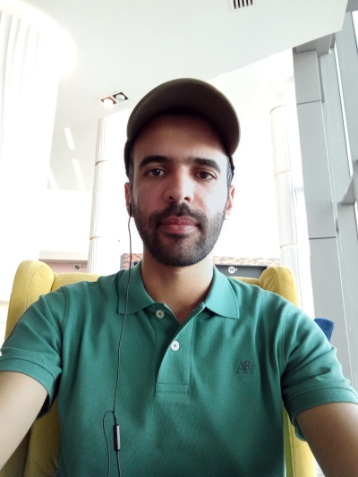

About Me
I hold an engineering degree in Water Resources from ESIM (Tunisia) and an M.Sc. in Geoinformatics from MAICh (Greece). I have demonstrated experience in designing irrigation network systems and landscape maintenance. I am skilled in using satellite imagery, geospatial technologies, and machine learning techniques to solve existing environmental issues. I am able to build data analysis workflows that help experts working in the government or the private sector implement better decision-making systems. I am skilled in utilizing free and open source solutions, and I place a high value on attention to detail, problem-solving ability, writing well-documented and efficient code, and delivering results.
Main focus on using Julia+Python libraries for data analysis & FastAPI, React, and MongoDB for the development of web applications. In addition, I can build cost-effective websites/web apps with Streamlit (usually used for rapid-cycle prototyping before scaling up).
- Programming Languages: Python, Julia, R, and JavaScript (Google Earth Engine).
- GIS, Remote Sensing, and CAD: Arc-GIS, Qgis, ERDAS Imagine, SNAP, and AutoCAD.
- Water Resources Modeling: SWMM, HecRas, and Modflow.
- Statistical Analyses: Hyfran, and JMP (from SAS).
- Fast Prototyping of Web Applications: HTML, CSS, Streamlit, and Google Earth Engine.
- Full Development of Web applications: FastAPI, MongoDB, React, and Docker.
- Machine Learning: TensorFlow, Keras, and Scikit-learn
- Version Control: Git, and Github.
- Reference Manager: Mendeley.
- Graphical Design: Inkscape.
Professional Experience
| March 2021 – Present | Irrigation Engineer in First Agriculture Company (Al Qamra Holding Group) (Doha - Qatar) |
| October 2020 – March 2022 | Master Thesis in the laboratory of Geographic Information Systems and Remote Sensing at MAICh (Chania - Greece) |
| June – November 2017 | Master Thesis in the research unit of Sustainable Management of Water and Soil Resources (Tunisia) |
| January – July 2016 | Water Resources Engineer in the Society of Hydraulics, Materials and Technologies (Tunisia) |
| February – June 2015 | Engineering Graduation Project in the ministry of Equipment, Housing and Land Planning (Department of Urban Hydraulics) (Tunisia) |